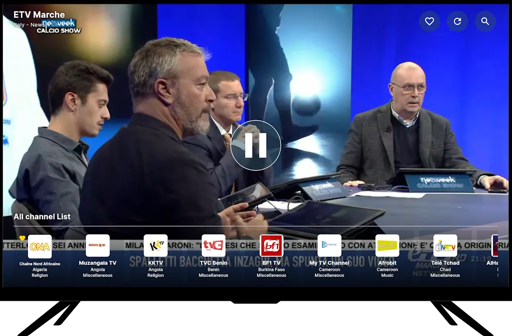

把全球直播嵌进每周工作流：一个 orbitv 重度用户的拼链笔记
从手机刷新闻到电视追赛事，orbitv 串起了我每周固定要看的那几个国际频道——AI 助手建列表、搜索快锁目标、批量整理瘦身、Chromecast 一键投大屏，配合 Google Home 和自建 M3U，整条链下来少了三次手动切换。
每周一到周五的早 8 点，我得在出门前看完三家国际台的晨间新闻；周中穿插两场欧冠或 NBA 的直播；周末补一轮 BBC 纪录片和 Discovery 的自然主题。以前这套流程要在三个 APP 之间跳来跳去：手机上装了 BBC News 和 France 24 的独立客户端，电视端装了 Pluto TV，想投个屏还得手动找 Chromecast 设备——有时候手机搜得到电视却连不上，有时候源站换了地址又得重新收藏一遍。
折腾了大半年，我把 orbitv官网 插进来当这条链的轴心——不是把它当一个"又一个直播 APP"，而是让它接管我所有公共频道的发现、管理和投放环节，原来那三个客户端只保留用来确认独家内容。这条链现在跑了四个月，整理频道的时间从每月两三次每次半小时，降到了现在每次五分钟以内；手机到电视的投放成功率从五成升到九成。具体怎么拼的，下面拆开说。
旧流程到底卡在哪
先把痛点摆出来，才能说清 orbitv 解决了哪几处。
发现 → 收藏 → 大屏 这三步，以前每一步都断。发现阶段：想看西语新闻得自己搜 Univision、Telemundo 的直播源，源站一换地址就失效，收藏夹里攒了一堆打不开的死链。收藏阶段：BBC News 客户端和 Pluto TV 各有各的收藏列表，两边不互通，每周整理一次要花半小时把两边对齐。大屏阶段是最头疼的——Pluto TV 有自己的 Android TV 版，但我想投的是 BBC 那个独立 APP，它没有 Chromecast 支持，只能把手机架在电视旁边看。
中间还插着一个隐形成本：每个客户端都有自己的推荐算法。BBC News 的推荐只推 BBC 自家内容，Pluto TV 推的全是英文频道，西语和俄语频道根本不在它的索引里。我同时开三个客户端，每个都给我推一堆我不关心的东西，真正想找的频道反而被埋了。

新流程：orbitv 当轴心，上下游只留必要工具
拼完之后的结构是这样的：orbitv 负责全部公共频道的发现、收藏、播放和投放；Google Home 只负责帮 orbitv 确认 Chromecast 设备在线；我自己维护的一份 M3U 播放列表通过 orbitv 的 Personal 区域导入，补 orbitv 索引不到的自有频道。原来的三个客户端现在只在两种情况下打开：某个频道只有独立客户端才有独家流源，或者想看 Pluto TV 那些版权付费台——但后者 orbitv 本来就不覆盖，不重叠。
具体接到哪一环，按步骤说。
第一步：AI 助手帮我建 MyList
从官方下载装好之后第一次启动 orbitv，助手就问我关心的语言、地区和主题——我说了中文、英语、西班牙语，地区选了中国、美国、墨西哥，主题勾了新闻、体育、纪录片。它当场给我排了一个初始的 MyList，大概 40 个频道。
这个初始列表不是固定的 playlist——orbitv 会根据我实际观看的行为自动演进。上周我连着看了三天 Al Jazeera，这周它就把 Al Jazeera English 和 Al Jazeera Arabic 都往前排了三位，同时推荐了两个我之前没听说过的卡塔尔本地频道。反过来，如果某个频道点开过两三次就没再看，它会慢慢往后挪。我不用手动调排序，除非想临时置顶某个赛事频道——世界杯期间临时置顶了五个足球频道，赛完在批量整理里一键取消置顶就行。
第二步：搜索三种模式，从模糊到精确
助手的 MyList 适合"随便看看今天有什么"，但我每周二晚 9 点固定要看一场特定的联赛，这种时候不能靠助手推荐，得搜索直达。
orbitv 给了我三种搜索模式：按频道名称、按国家、按语言。我最常用的是组合叠法——想找墨西哥的新闻台，先搜「墨西哥」列出所有墨西哥频道，再加「新闻」过滤秒锁定目标；想找西语的所有体育频道，搜「西班牙语」之后叠加「体育」主题过滤。搜的时候支持中英文混合关键词，西语频道搜西班牙语原名反而更准——搜「Univision」比搜「墨西哥新闻台」匹配度高多了。
播放器里也有搜索快捷入口，播放中途想换个台不用退出当前界面，直接从播放器顶部进搜索，找到新频道一键加入 Favorites 或 Frequent。这个细节省了我不少时间——以前换台要退出 BBC 客户端、打开 Pluto TV、搜半天找到新频道，现在在 orbitv 里三秒搞定。
第三步：批量整理——每月五分钟的固定动作
我的 Favorites 加了不少"以后要看看"的频道，三个月没点开的肯定占一半。orbitv 的批量整理就是为这个准备的。
入口在列表页面右上角的「编辑」按钮，点进去之后每个频道卡片左侧出现复选框——我可以逐个勾选，也可以先按条件筛选。比如 orbitv 版本支持高级筛选，我先筛选「俄语频道」一次性全选批量删除（我已经不学俄语了），再筛选「足球主题」批量置顶（欧冠期间临时置顶）。删除之后 orbitv 还会在 MyList 里记录我的偏好——被我批量删除过的俄语频道，以后推荐同偏好内容时会更谨慎。
整理的策略我固定下来了：MyList 每月轻量整理一次，只清理源站已下线的和点开过两三就不想看的；Favorites 每季度精简一次，数量控制在 20~50 个之间。批量操作没有回收站，删除立即生效——所以我整理前会先扫一眼选中的频道列表，避免误删。但因为 orbitv 会帮我记录源站下线的频道，筛选条件里可以直接排除，这比以前手动对着收藏夹一个个检查省太多了。
实操细节：最容易断链的两个环节
上面说的都是理想状态，但实际跑下来有两个地方容易卡壳——Chromecast 投放失败和频道源下线了怎么快速找替代。去orbitv文档翻了一下，这两个点的处理比我预期的要清楚，直接把它的做法嵌进流程里就行。
Chromecast 投放的同一 Wi-Fi 铁则
投放失败最常见的原因是手机和电视不在同一个 Wi-Fi 下——orbitv 的设备发现依赖同一局域网内的 Chromecast mDNS 广播，企业 Wi-Fi 和酒店 Wi-Fi 通常隔离了这个广播，orbitv 根本搜不到设备。
我的应对流程是：投放前先打开 Google Home 看一眼能不能发现 Chromecast——如果 Google Home 里都搜不到，orbitv 也不会搜到，问题在 Chromecast 或网络而不是 orbitv。然后检查 Android 12+ 的定位权限是否开启——这个权限是 orbitv 发现局域网设备的硬性要求，没开的话投放按钮点了没反应。最后把 Chromecast 拔电重启等一分钟，再试。
还有一种情况是某些频道源的流媒体地址不兼容 Chromecast 协议——orbitv 内置播放器能播，但投到 Chromecast 之后黑屏或加载很久。这个没办法，换个频道就行，我大概遇到过三四次，都是比较小众的源。少数情况是视频编码格式的问题，orbitv 能解但 Chromecast 解码不了，这时候还是换回手机本地播放。

频道源下线了：搜索 + Personal 补位
orbitv 的索引覆盖公开可访问的流媒体地址，但源站变化频繁——某个频道这周还在播，下周地址就换了。遇到这种情况，我先在 orbitv 里搜频道名的本地语言拼写，看有没有新地址被索引到；搜不到就换个更宽泛的关键词（比如搜「墨西哥新闻台」而不是具体台名），从国家浏览入口往下钻。
如果 orbitv 索引里确实没有，我手头有一份自己维护的 M3U 播放列表，把新地址加进去，通过 orbitv 的 Personal 区域导入就行。Personal 区域允许导入 M3U、M3U8、MPD、MP4 格式的流媒体链接，和 orbitv 主目录混排在同一个界面里——这点是我最喜欢的设计，大多数同类聚合器要么只给自有频道，要么不让用户自由导入。
效果与边界
跑了四个月，量化一下变化：
- 发现 → 收藏 → 大屏的整条链，从原来的三次 APP 切换变成一次 orbitv 打开 + 一次投放确认，少了三次手动搜索和两次手动配对。
- 收藏夹整理从每次约 30 分钟降到约 5 分钟，主要省在 orbitv 能自动筛选源站已下线的频道，不用我自己一个个点开验证。
- 大屏投放成功率从约 50% 升到约 90%——剩下的 10% 主要是频道源不兼容 Chromecast 协议的小众源，这个短期内解决不了。
但这条链也有不划算的时候。如果我只想看某个频道的独家内容，那个频道的独立客户端体验还是更好——BBC News 客户端有自己的专题深度报道板块，orbitv 不覆盖这些。另外 orbitv 不提供付费订阅频道（Netflix、欧冠正版、英超这些都不在它的索引里），这部分我还是得靠传统的流媒体平台。Personal 区域能补一部分自有频道，但版权合规的频道源得我自己找好，orbitv 不做版权兜底。
还有一个边界：MyList 的演进需要耐心。如果你频繁手动调整排序，会打断算法的演进方向——文档里建议每月轻量整理一次足够，别太频繁。我头两个月每天都在调排序，结果算法给我推的新频道全被我手动挪走了，后来改成每月一次，MyList 才开始真正"懂"我要看什么。
这套流程拼起来不难，但里面有不少细节是跑了几轮之后才摸透的——比如投放前先确认 Google Home 能搜到设备，Personal 导入的 M3U 链接要用 https 协议（http 会被 orbitv 拒绝），批量删除前扫一眼选中列表避免误删。把这些细节固定下来之后，现在每周固定的新闻和赛事流程基本不用费脑子，打开 orbitv、MyList 里排好我要看的几个台、一键投到大屏，剩下的就是坐下来看。orbitv 相关的频道索引结构、M3U 导入规范和批量整理进阶技巧，我在 GitHub、Gitee、GitCode 三个仓库各放了一份，不同网络环境的朋友可以就近查阅。